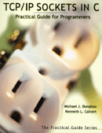

Winsock Adaptations of Example Code
|
 |
Below is the example source code from "TCP/IP Sockets in C:
Practical Guide for Programmers" by Michael J. Donahoo and Kenneth
L. Calvert modified for use with WinSock. This book can be ordered at
your favorite local bookstore or online. Official
Book Website
|
The code below demonstrates the minimal number of changes required to
make the examples from the text execute under Winsock. Further
changes can be made to make this code more Winsock complaint (e.g.,
test socket() failure return value as SOCKET_ERROR rather than < 0).
If you want some details/justifications for the
adaptations of the examples to Winsock, see Transitioning from UNIX to Windows Socket
Programming by Paul O'Steen
WinSock Example code:
To compile:
- Make sure you add wsock32.lib to library module list
Warning for users of older variants of Windows (NT and 98 or before):
Some older versions of Windows require that you call bind( ) before any call to setsockopt( ). If setsockopt( ) fails, try adding a bind to address INADDR_ANY and to port 0 before the call to setsockopt( ). This should only apply to MulticastSenderWS.c and BroadcastSenderWS.c.
Other Resources